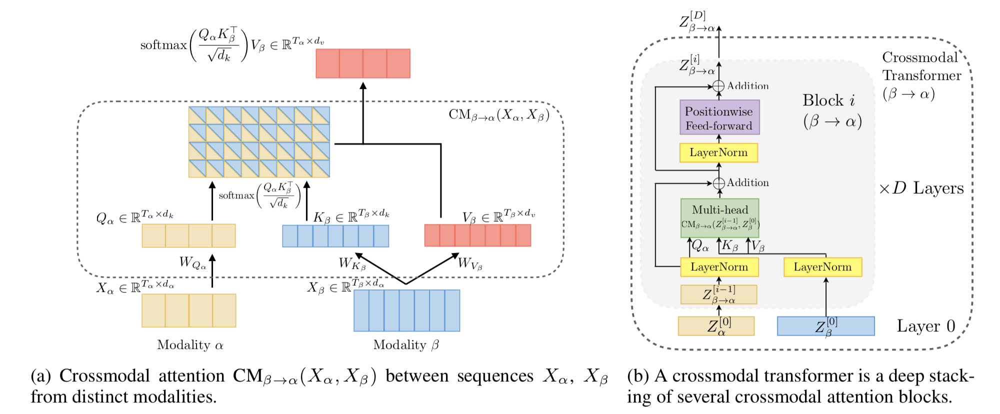

The Alignment Assumption
Classical vision-language models (e.g. CLIP, ALIGN) are trained with paired
data — each image has an exactly matching caption. Contrastive loss pulls
matching pairs together and pushes non-matching pairs apart in embedding space.
This works well but has a hard requirement: you need aligned pairs at scale.
What "Unaligned" Means
Unaligned multi-modal learning drops the one-to-one correspondence requirement.
Instead of needing (image_i, caption_i) pairs, the model can learn from:
- Loosely related documents and images
- Interleaved web data (image anywhere in an article)
- Multiple images per text or vice versa
Architecture Sketch
Image → Patch Encoder → Visual Tokens ─┐
├→ Cross-Modal Transformer → Output
Text → Token Encoder → Text Tokens ──┘The key change: the cross-attention layers in the transformer no longer assume
a positional correspondence between visual and text tokens.
A soft routing mechanism (learnable or attention-based) decides which
visual tokens are relevant for each text token at each layer.

Why It Matters for CAE
In engineering simulation contexts, we often have:
- Geometry screenshots + unstructured solver notes
- Mesh images + tabular result summaries
- CAD renders + informal design descriptions
None of these are tightly aligned. Unaligned multi-modal models could enable
automated report understanding, anomaly detection from mixed media datasets,
and richer surrogate model inputs — without requiring expensive annotation pipelines.
Implementation (Simplified)
class UnalignedCrossAttention(nn.Module):
def __init__(self, d_model, n_heads):
super().__init__()
self.attn = nn.MultiheadAttention(d_model, n_heads, batch_first=True)
self.router = nn.Linear(d_model, 1) # soft token selector
def forward(self, text_tokens, visual_tokens):
# Route: weight visual tokens by relevance
weights = torch.softmax(self.router(visual_tokens), dim=1)
attended_visual = (visual_tokens * weights).sum(dim=1, keepdim=True)
out, _ = self.attn(text_tokens, attended_visual.expand_as(text_tokens),
attended_visual.expand_as(text_tokens))
return outCurrent State of Research
Models like Flamingo, BLIP-2, and LLaVA all handle varying degrees
of alignment looseness. The trend is towards more flexible architectures that
treat modalities as interchangeable token streams — a direction that makes
multi-modal models far more practical for real-world, messy datasets.